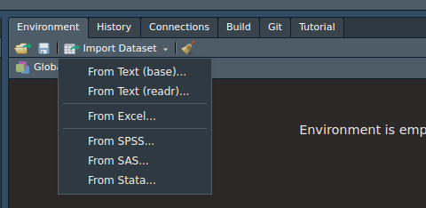
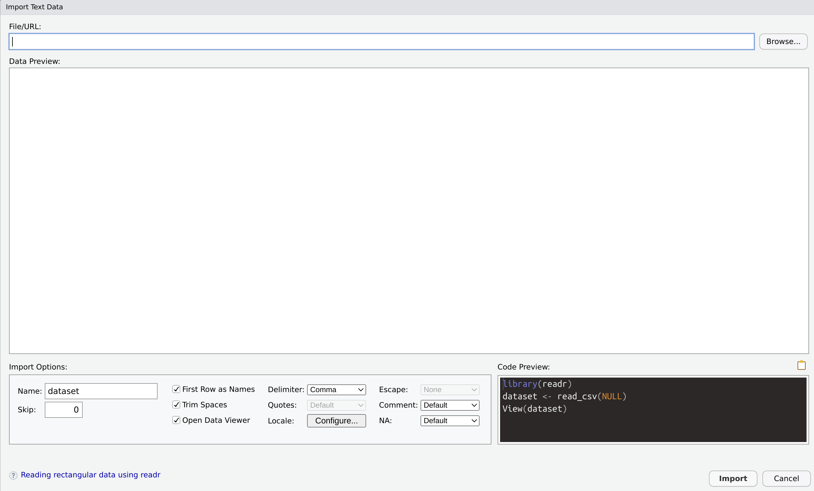

2 + 2#> [1] 4This chapter focuses on the basics of R programming. While most of your statistical analysis will be done with R functions, it is important to have an idea of what is going on. Additionally, we will cover other topics that you may or may not need to know. The topics we will cover are:
Basic calculations in R
Types of Data
R Objects
R Functions
R Packages
This section focuses on the basic calculation that can be done in R. This is done by using different operators in R. The table below provides some of the basic operators R can use:
| Operator | Description |
|---|---|
+ |
Addition |
- |
Subtraction |
* |
Multiplication |
/ |
Divides |
^ or ** |
Exponent |
? |
Help Documentation |
To add numbers in R, all you need to use the + operator. For example \(2 + 2 = 4\). When you type it in R you have:
2 + 2#> [1] 4When you ask R to perform a task, it prints out the result of the task. As we can see above, R prints out the number 4.
To add more than 2 numbers, you can simply just type it in.
2 + 2 + 2#> [1] 6This provides the number 6.
To subtract numbers, you need to use the - operator. Try 4 - 2:
4 - 2#> [1] 2Try 4 - 6 - 4
4 - 6 - 4#> [1] -6Notice that you get a negative number.
Now try 4 + 4 - 2 + 8:
4 + 4 - 2 + 8#> [1] 14To multiply numbers, you will need to use the * operator. Try 4 * 4:
4 * 4#> [1] 16To divide numbers, you can use the / operator. Try 9 / 3:
9 / 3#> [1] 3To exponentiate a number to the power of another number, you can use the ^ operator. Try 2^5:
2^5#> [1] 32If you want to find \(e^2\), you will use the exp() function. Try exp(2):
exp(2)#> [1] 7.389056To take the n-th root of a value, use the ^ operator with the / operator to take the n-th root. For example, to take \(\sqrt[5]{35}\), type 32^(1/5):
32^(1/5)#> [1] 2To take the natural logarithm of a value, you will use the log() function. Try log(5):
log(5)#> [1] 1.609438If you want to take the logarithm of a different base, you will use the log() function with base argument. We will discuss this more in Section 3.
Use the code console below to attempt other arithmetic operations such as \(\ln(e^{23}) + \sin(2\pi) - 54/9*(3-8)^2\):
Another important part of R is comparing numbers. When you compare two numbers, R will tell if the statement is TRUE or FALSE. Below are the different comparisons you can make:
| Operator | Description |
|---|---|
> |
Greater Than |
< |
Less Than |
>= |
Greater than or equal |
<= |
Less than or equal |
== |
Equals |
!= |
Not Equals |
To check if one number is less than or greater than another number, you will use the > or < operators. Try 5 > 4:
5 > 4#> [1] TRUENotice that R states it’s true. It evaluates the expression and tells you if it’s true or not. Try 5 < 4:
5 < 4#> [1] FALSENotice that R tells you it is false.
To check if one number is less than or equal to/greater than or equal to another number, you will use the >= or <= operators. Try 5 >= 5:
5 >= 5#> [1] TRUETry 5 >= 4:
5 >= 4#> [1] TRUETry 5 <= 4
5 <= 4#> [1] FALSETo check if 2 numbers are equal to each other, you can use the == operator. Try 3 == 3:
3 == 3#> [1] TRUETry 4 == 3
3 == 4#> [1] FALSEAnother way to see if 2 numbers are not equal to each other, you can use the !=. Try 3 != 4:
3 != 4#> [1] TRUETry 3 != 3:
3 != 3#> [1] FALSEYou may be asking why use != instead of ==. They both provides similar results. Well the reason is that you may need the TRUE output for analysis. One is only true when they are equal, while the other is true when they are not equal.
In general, the ! operator means not or opposite. It can be used to change an TRUE to a FALSE and vice-versa.
The last operator we will discuss is the help operator ?. If you want to know more about anything we talked about you can type ? in front of a function and a help page will pop-up in your browser or in RStudio’s ‘Help’ tab. For example you can type ?Arithmetic or ?Comparison, to review what we talked about. For other operators we didn’t talk about use ?assignOps and ?Logic.
In R, the type of data, also known as class, we are using dictates how the programming works. For the most part, users will use numeric, logical, POSIX and character data types. Other types of data you may encounter are complex and raw. To obtain more information on them, use the ? operator.
The numeric class is the data that are numbers. Almost every analysis that you use will be based on the numeric class. To check if you have a numeric class, you just need to use the is.numeric() function. For example, try is.numeric(5):
is.numeric(5)#> [1] TRUENumeric classes are essentially double and integer types of data. For example a double data is essentially a number with decimal value. An integer data are whole numbers. Try is.numeric(5.63), is.double(5.63) and is.integer(5.63):
is.numeric(5.63)#> [1] TRUEis.double(5.63)#> [1] TRUEis.integer(5.63)#> [1] FALSENotice how the value \(5.63\) is a numeric and double but not integer. Now let’s try is.numeric(7), is.double(7) and is.integer(7):
is.numeric(7)#> [1] TRUEis.double(7)#> [1] TRUEis.integer(7)#> [1] FALSENotice how the value \(7\) is also considered a numeric and double but not integer. This is because typing a whole number will be stored as a double. However, if we need to store an integer, we will need to type the letter “L” after the number. Try is.numeric(7L), is.double(7L), and is.integer(7L):
is.numeric(7L)#> [1] TRUEis.double(7L)#> [1] FALSEis.integer(7L)#> [1] TRUEA logical class are data where the only value is TRUE or FALSE. Sometimes the data is coded as 1 for TRUE and 0 for FALSE. The data may also be coded as T or F. To check if data belongs in the logical class, you will need the is.logical() function. Try is.logical(3 < 4):
is.logical(3 < 4)#> [1] TRUEThis is same comparison from Section 1.2. The output was TRUE. Now R is checking whether the output is of a logical class. Since it it, R returns TRUE. Now try is.logical(3 > 4):
is.logical(3 > 4)#> [1] TRUEThe output is TRUE as well even though the condition 3 > 4 is FALSE. Since the output is a logical data type, it is a logical variable.
The POSIX class are date-time data. Where the data value is a time component. The POSIX class can be very complex in how it is formatted. IF you would like to learn more try ?POSIXct or ?POSIClt. First, lets run Sys.time() to check what is today’s data and time:
Sys.time()#> [1] "2024-10-21 23:22:04 PDT"Now lets check if its of POSIX class, you can use the class() function to figure out which class is it. Try class(Sys.time()):
class(Sys.time())#> [1] "POSIXct" "POSIXt"A character value is where the data values follow a string format. Examples of character values are letters, words and even numbers. A character value is any value surrounded by quotation marks. For example, the phrase “Hello World!” is considered as one character value. Another example is if your data is coded with the actual words “yes” or “no”. To check if you have character data, use the is.character() function. Try is.character("Hello World!"):
is.character("Hello World!")#> [1] TRUENotice that the output says TRUE. Character values can be created with single quotations. Try is.character('Hello World!'):
is.character('Hello World!')#> [1] TRUEComplex numbers are data values where there is a real component and an imaginary component. The imaginary component is a number multiplied by \(i=\sqrt{-1}\). To create a complex number, use the complex() function. To check if a number is complex, use the is.complex() function. Try the following to create a complex number complex(1, 4, 5):
complex(1, 4, 5)#> [1] 4+5iNow try is.complex(complex(1, 4, 5)):
is.complex(complex(1, 4, 5))#> [1] TRUEYou will probably never use raw data. I have never used raw data in R. To create a raw value, use the raw() or charToRaw() functions. Try charToRaw('Hello World!'):
charToRaw('Hello World!')#> [1] 48 65 6c 6c 6f 20 57 6f 72 6c 64 21To check if you have raw data, use the is.raw() function. Try is.raw(charToRaw('Hello World!')):
is.raw(charToRaw('Hello World!'))#> [1] TRUEThe last data class in R is missing data. The table below provides a brief introduction of the different types of missing data
| Value | Description | Functions |
|---|---|---|
NULL |
These are values indicating an object is empty. Often used for functions with values that are undefined. | is.null() |
NA |
Stands for “Not Available”, used to indicate that the value is missing in the data. | is.na() |
NaN |
Stands for “Not an Number”. Used to indicate a missing number. | is.nan() |
Inf and -Inf |
Indicating an extremely large value or a value divided by 0. | is.infinite() |
An R function is the procedure that R will execute to certain data. For example, the log(x) is an R function. It takes the value x and provides you the natural logarithm. Here x is known as an argument which needs to be specified to us the log() function. Find the log(x = 5)
log(x = 5)#> [1] 1.609438Another argument for the log() function is the base argument. With the previous code, we did not specify the base argument, so R makes the base argument equal to the number \(e\). If you want to use the common log with base 10, you will need to set the base argument equal to 10.
Try log(x = 5, base = 10)
log(x = 5, base = 10)#> [1] 0.69897Now try log(5,10)
log(5,10)#> [1] 0.69897Notice that it provides the same value. This is because R can set arguments based on the values position in the function, regardless if the arguments are specified. For log(5,10), R thinks that 5 corresponds to the first argument x and 10 is the second argument base.
To learn more about a functions, use the ? operator on the function: ?log.
R objects are where most of your data will be stored. An R object can be thought of as a container of data. Each object will share some sort of characteristics that will make the unique for different types of analysis.
To create an R object, all we need to do is assign data to a variable. The variable is the name of the R object. it can be called anything, but you can only use alphanumeric values, underscore, and periods. To assign a value to a variable, use the <- operator. This is known a left assignment. Kinda like an arrow pointing left. Try assigning 9 to ‘x’ (x <- 9):
x <- 9To see if x contains 9, type x in the console:
x#> [1] 9Now x can be treated as data and we can perform data analysis on it. For example, try squaring it:
x^2#> [1] 81You can use any mathematical operation from the previous sections. Try some other operations and see what happens.
The output R prints out can be stored in a variable using the asign operator, <-. Try storing x^3 in a variable called x_cubed:
x_cubed <- x^3To see what is stored in x_cubed you can either type x_cubed in the console or use the print() function with x_cubed inside the parenthesis.
x_cubed#> [1] 729print(x_cubed)#> [1] 729A vector is a set data values of a certain length. The R object x is considered as a numerical vector (because it contains a number) with the length 1. To check, try is.numeric(x) and is.vector(x):
is.numeric(x)#> [1] TRUEis.vector(x)#> [1] TRUENow let’s create a logical vector that contains 4 elements (have it follow this sequence: T, F, T, F) and assign it to y. To create a vector use the c()1 function and type all the values and separating them with columns. Type y <- c(T, F, T, F):
y <- c(T, F, T, F)Now, lets see how y looks like. Type y:
y#> [1] TRUE FALSE TRUE FALSENow lets see if it’s a logical vector:
is.logical(y)#> [1] TRUEis.vector(y)#> [1] TRUEFortunately, this vector is really small to count how many elements it has, but what if the vector is really large? To find out how many elements a vector has, use the length() function. Try length(y):
length(y)#> [1] 4A matrix can be thought as a square or rectangular grid of data values. This grid can be constructed can be any size. Similar to vectors they must contain the same data type. The size of a matrix is usually denoted as \(n\times k\), where \(n\) represents the number of rows and \(k\) represents the number of columns. To get a rough idea of how a matrix may look like, type matrix(rep(1,12), nrow = 4, ncol = 3)2:
matrix(rep(1, 12), nrow = 4, ncol = 3)#> [,1] [,2] [,3]
#> [1,] 1 1 1
#> [2,] 1 1 1
#> [3,] 1 1 1
#> [4,] 1 1 1Notice that this is a \(4\times 3\) matrix. Each element in the matrix has the value 1. Now try this matrix(rbinom(12,1.5), nrow = 4, ncol = 3)3:
matrix(rbinom(12, 1, .5), nrow = 4, ncol = 3)#> [,1] [,2] [,3]
#> [1,] 0 1 0
#> [2,] 1 1 0
#> [3,] 0 0 0
#> [4,] 1 0 1Your matrix may look different, but that is to be expected. Notice that some elements in a matrix are 0’s and some are 1’s. Each element in a matrix can hold any value.
An alternate approach to creating matrices is with the use of rbind() and cbind() functions. Using 2 vectors, and matrices, of the same length, the rbind() will append the vectors together by each row. Similarly, the cbind() function will append vectors, and matrices, of the same length by columns.
x <- 1:4
y <- 5:8
z <- 9:12
cbind(x, y, z)#> x y z
#> [1,] 1 5 9
#> [2,] 2 6 10
#> [3,] 3 7 11
#> [4,] 4 8 12rbind(x, y, z)#> [,1] [,2] [,3] [,4]
#> x 1 2 3 4
#> y 5 6 7 8
#> z 9 10 11 12If you want to create a matrix of a specific size without any data, you can use the matrix() function and only specify the nrow and ncol arguments. Here we are creating a \(5\times 11\) empty matrix:
matrix(nrow = 5, ncol = 11)#> [,1] [,2] [,3] [,4] [,5] [,6] [,7] [,8] [,9] [,10] [,11]
#> [1,] NA NA NA NA NA NA NA NA NA NA NA
#> [2,] NA NA NA NA NA NA NA NA NA NA NA
#> [3,] NA NA NA NA NA NA NA NA NA NA NA
#> [4,] NA NA NA NA NA NA NA NA NA NA NA
#> [5,] NA NA NA NA NA NA NA NA NA NA NALastly, if you need to find out the dimensions of a matrix, you can use dim() function on a matrix:
dim(matrix(nrow = 5, ncol = 11))#> [1] 5 11This will return a vector of length 2 with the first element being the number of rows and the second element being the number of columns.
Matrices can be considered as a 2-dimensional block of numbers. An array is an n-dimensional block of numbers. While you may never need to use an array for data analysis. It may come in handy when programming by hand. To create an array, use the array() function. Below is an example of a \(3 \times 3 \times 3\) with the numbers 1, 2, and 3 representing the 3rd dimension stored in an R object called first_array4.
(first_array <- array(c(rep(1, 9), rep(2, 9), rep(3, 9)),
dim=c(3,3,3)))#> , , 1
#>
#> [,1] [,2] [,3]
#> [1,] 1 1 1
#> [2,] 1 1 1
#> [3,] 1 1 1
#>
#> , , 2
#>
#> [,1] [,2] [,3]
#> [1,] 2 2 2
#> [2,] 2 2 2
#> [3,] 2 2 2
#>
#> , , 3
#>
#> [,1] [,2] [,3]
#> [1,] 3 3 3
#> [2,] 3 3 3
#> [3,] 3 3 3Data frames are similar to data set that you may encounter in an excel file. However, there are a couple of differences. First, each row represents an observation, and each column represents a characteristic of the observation. Additionally, each column in a data frame will be the same data type. To get an idea of what a data frame looks like, try head(iris) 5:
head(iris)In the data frame, the rows indicate a specific observation and the columns are the values of a variable. In terms of the iris data set, we can see that row 1 is a specific flower that has a sepal length of 5.1. We can also see that flower 1 has other characteristics such as sepal width and petal length. Lastly, there are results for the other flowers.
Now try tail(iris):
tail(iris)The tail() function provides the last 6 rows of the data frame.
Lastly, if you are interested in viewing a specific variable (column) from a data frame, you can use the $ operator to specify which variable from a specific data frame. For example, if we are interested in observing the Sepal.Length variable from the iris data frame, we will type iris$Sepal.Length:
iris$Sepal.Length#> [1] 5.1 4.9 4.7 4.6 5.0 5.4 4.6 5.0 4.4 4.9 5.4 4.8 4.8 4.3 5.8 5.7 5.4 5.1 5.7 5.1 5.4 5.1 4.6 5.1 4.8 5.0 5.0 5.2 5.2 4.7 4.8 5.4 5.2 5.5 4.9 5.0 5.5 4.9 4.4 5.1 5.0 4.5 4.4 5.0 5.1 4.8 5.1 4.6 5.3 5.0 7.0 6.4 6.9
#> [54] 5.5 6.5 5.7 6.3 4.9 6.6 5.2 5.0 5.9 6.0 6.1 5.6 6.7 5.6 5.8 6.2 5.6 5.9 6.1 6.3 6.1 6.4 6.6 6.8 6.7 6.0 5.7 5.5 5.5 5.8 6.0 5.4 6.0 6.7 6.3 5.6 5.5 5.5 6.1 5.8 5.0 5.6 5.7 5.7 6.2 5.1 5.7 6.3 5.8 7.1 6.3 6.5 7.6
#> [107] 4.9 7.3 6.7 7.2 6.5 6.4 6.8 5.7 5.8 6.4 6.5 7.7 7.7 6.0 6.9 5.6 7.7 6.3 6.7 7.2 6.2 6.1 6.4 7.2 7.4 7.9 6.4 6.3 6.1 7.7 6.3 6.4 6.0 6.9 6.7 6.9 5.8 6.8 6.7 6.7 6.3 6.5 6.2 5.9To me a list is just a container that you can store practically anything. It is compiled of elements, where each element contains an R object. For example, the first element of a list may contain a data frame, the second element may contain a vector, and the third element may contain another list. It is just a way to store things.
To create a list, use the list() function. Create a list compiled of first element with the mtcars data set, second element with a vector of zeros of size 4, and a matrix \(3 \times 3\) identity matrix6. Store the list in an object called list_one:
list_one <- list(mtcars, rep(0, 4),
diag(rep(1, 3)))Type list_one to see what pops out:
list_one#> [[1]]
#> mpg cyl disp hp drat wt qsec vs am gear carb
#> Mazda RX4 21.0 6 160.0 110 3.90 2.620 16.46 0 1 4 4
#> Mazda RX4 Wag 21.0 6 160.0 110 3.90 2.875 17.02 0 1 4 4
#> Datsun 710 22.8 4 108.0 93 3.85 2.320 18.61 1 1 4 1
#> Hornet 4 Drive 21.4 6 258.0 110 3.08 3.215 19.44 1 0 3 1
#> Hornet Sportabout 18.7 8 360.0 175 3.15 3.440 17.02 0 0 3 2
#> Valiant 18.1 6 225.0 105 2.76 3.460 20.22 1 0 3 1
#> Duster 360 14.3 8 360.0 245 3.21 3.570 15.84 0 0 3 4
#> Merc 240D 24.4 4 146.7 62 3.69 3.190 20.00 1 0 4 2
#> Merc 230 22.8 4 140.8 95 3.92 3.150 22.90 1 0 4 2
#> Merc 280 19.2 6 167.6 123 3.92 3.440 18.30 1 0 4 4
#> Merc 280C 17.8 6 167.6 123 3.92 3.440 18.90 1 0 4 4
#> Merc 450SE 16.4 8 275.8 180 3.07 4.070 17.40 0 0 3 3
#> Merc 450SL 17.3 8 275.8 180 3.07 3.730 17.60 0 0 3 3
#> Merc 450SLC 15.2 8 275.8 180 3.07 3.780 18.00 0 0 3 3
#> Cadillac Fleetwood 10.4 8 472.0 205 2.93 5.250 17.98 0 0 3 4
#> Lincoln Continental 10.4 8 460.0 215 3.00 5.424 17.82 0 0 3 4
#> Chrysler Imperial 14.7 8 440.0 230 3.23 5.345 17.42 0 0 3 4
#> Fiat 128 32.4 4 78.7 66 4.08 2.200 19.47 1 1 4 1
#> Honda Civic 30.4 4 75.7 52 4.93 1.615 18.52 1 1 4 2
#> Toyota Corolla 33.9 4 71.1 65 4.22 1.835 19.90 1 1 4 1
#> Toyota Corona 21.5 4 120.1 97 3.70 2.465 20.01 1 0 3 1
#> Dodge Challenger 15.5 8 318.0 150 2.76 3.520 16.87 0 0 3 2
#> AMC Javelin 15.2 8 304.0 150 3.15 3.435 17.30 0 0 3 2
#> Camaro Z28 13.3 8 350.0 245 3.73 3.840 15.41 0 0 3 4
#> Pontiac Firebird 19.2 8 400.0 175 3.08 3.845 17.05 0 0 3 2
#> Fiat X1-9 27.3 4 79.0 66 4.08 1.935 18.90 1 1 4 1
#> Porsche 914-2 26.0 4 120.3 91 4.43 2.140 16.70 0 1 5 2
#> Lotus Europa 30.4 4 95.1 113 3.77 1.513 16.90 1 1 5 2
#> Ford Pantera L 15.8 8 351.0 264 4.22 3.170 14.50 0 1 5 4
#> Ferrari Dino 19.7 6 145.0 175 3.62 2.770 15.50 0 1 5 6
#> Maserati Bora 15.0 8 301.0 335 3.54 3.570 14.60 0 1 5 8
#> Volvo 142E 21.4 4 121.0 109 4.11 2.780 18.60 1 1 4 2
#>
#> [[2]]
#> [1] 0 0 0 0
#>
#> [[3]]
#> [,1] [,2] [,3]
#> [1,] 1 0 0
#> [2,] 0 1 0
#> [3,] 0 0 1Each element in the list is labeled as a number. It is more useful to have the elements named. An element is named by typing the name in quotes followed by the = symbol before your object in the list() function (mtcars=mtcars).
list_one <- list(mtcars = mtcars,
vector = rep(0, 4),
identity = diag(rep(1, 3)))Here I am creating an object called list_one, where the first element is mtcars labeled mtcars, the second element is a vector of zeros labeled vector and the last element is the identity matrix labeled identity.’
Now create a new list called list_two and store list_one labeled as list_one and first_array labeled as array.
(list_two <- list(list_one = list_one,
array = first_array))#> $list_one
#> $list_one$mtcars
#> mpg cyl disp hp drat wt qsec vs am gear carb
#> Mazda RX4 21.0 6 160.0 110 3.90 2.620 16.46 0 1 4 4
#> Mazda RX4 Wag 21.0 6 160.0 110 3.90 2.875 17.02 0 1 4 4
#> Datsun 710 22.8 4 108.0 93 3.85 2.320 18.61 1 1 4 1
#> Hornet 4 Drive 21.4 6 258.0 110 3.08 3.215 19.44 1 0 3 1
#> Hornet Sportabout 18.7 8 360.0 175 3.15 3.440 17.02 0 0 3 2
#> Valiant 18.1 6 225.0 105 2.76 3.460 20.22 1 0 3 1
#> Duster 360 14.3 8 360.0 245 3.21 3.570 15.84 0 0 3 4
#> Merc 240D 24.4 4 146.7 62 3.69 3.190 20.00 1 0 4 2
#> Merc 230 22.8 4 140.8 95 3.92 3.150 22.90 1 0 4 2
#> Merc 280 19.2 6 167.6 123 3.92 3.440 18.30 1 0 4 4
#> Merc 280C 17.8 6 167.6 123 3.92 3.440 18.90 1 0 4 4
#> Merc 450SE 16.4 8 275.8 180 3.07 4.070 17.40 0 0 3 3
#> Merc 450SL 17.3 8 275.8 180 3.07 3.730 17.60 0 0 3 3
#> Merc 450SLC 15.2 8 275.8 180 3.07 3.780 18.00 0 0 3 3
#> Cadillac Fleetwood 10.4 8 472.0 205 2.93 5.250 17.98 0 0 3 4
#> Lincoln Continental 10.4 8 460.0 215 3.00 5.424 17.82 0 0 3 4
#> Chrysler Imperial 14.7 8 440.0 230 3.23 5.345 17.42 0 0 3 4
#> Fiat 128 32.4 4 78.7 66 4.08 2.200 19.47 1 1 4 1
#> Honda Civic 30.4 4 75.7 52 4.93 1.615 18.52 1 1 4 2
#> Toyota Corolla 33.9 4 71.1 65 4.22 1.835 19.90 1 1 4 1
#> Toyota Corona 21.5 4 120.1 97 3.70 2.465 20.01 1 0 3 1
#> Dodge Challenger 15.5 8 318.0 150 2.76 3.520 16.87 0 0 3 2
#> AMC Javelin 15.2 8 304.0 150 3.15 3.435 17.30 0 0 3 2
#> Camaro Z28 13.3 8 350.0 245 3.73 3.840 15.41 0 0 3 4
#> Pontiac Firebird 19.2 8 400.0 175 3.08 3.845 17.05 0 0 3 2
#> Fiat X1-9 27.3 4 79.0 66 4.08 1.935 18.90 1 1 4 1
#> Porsche 914-2 26.0 4 120.3 91 4.43 2.140 16.70 0 1 5 2
#> Lotus Europa 30.4 4 95.1 113 3.77 1.513 16.90 1 1 5 2
#> Ford Pantera L 15.8 8 351.0 264 4.22 3.170 14.50 0 1 5 4
#> Ferrari Dino 19.7 6 145.0 175 3.62 2.770 15.50 0 1 5 6
#> Maserati Bora 15.0 8 301.0 335 3.54 3.570 14.60 0 1 5 8
#> Volvo 142E 21.4 4 121.0 109 4.11 2.780 18.60 1 1 4 2
#>
#> $list_one$vector
#> [1] 0 0 0 0
#>
#> $list_one$identity
#> [,1] [,2] [,3]
#> [1,] 1 0 0
#> [2,] 0 1 0
#> [3,] 0 0 1
#>
#>
#> $array
#> , , 1
#>
#> [,1] [,2] [,3]
#> [1,] 1 1 1
#> [2,] 1 1 1
#> [3,] 1 1 1
#>
#> , , 2
#>
#> [,1] [,2] [,3]
#> [1,] 2 2 2
#> [2,] 2 2 2
#> [3,] 2 2 2
#>
#> , , 3
#>
#> [,1] [,2] [,3]
#> [1,] 3 3 3
#> [2,] 3 3 3
#> [3,] 3 3 3As stated before, R’s functionality can be extended to do more things by installing R packages. An R package can be thought as extra software. This allows you to do more with R. To install an R package, you will need to use the install.packages("NAME_OF_PACKAGE") function. Once you install it, you do not need to install it again. To use the R package, use library("NAME_OF_PACKAGE"). This allows you to load the package in R. You will need to load the package every time you start R. For more information, please watch the video:
install Packages from RStudio, Inc. on Vimeo.
In order to analyze data in R, we must load it into the R environment. This can be done in 2 ways, using the “Import Dataset” button in the “Environment” tab in RStudio or use R code.
This is the most recommended way to import data in RStudio because it can provide R code that you can copy and paste in an R Script.
To begin choose the “Import Dataset” from the “Environment” tab in RStudio:

Afterwards, select the type of file that you may need to import. If you select the “From Text (readr)…” option, a popup window will appear:

You can now navigate to the file that you may want to import with the “Browse…” button and modify it the process as needed with the options. Afterwards, you can copy the code in the lower-right hand corner and save it in an R script
The c() function allows you to put any data type and as many values as you wish. The only condition of a vector is that it must be the same data type.↩︎
The function rep() creates a vector by repeating a value for a certain length. rep(1,12) creates a vector of length 12 with each element being 1. We use the nrow and ncol arguments in the function to specify the number of rows and columns, respectfully.↩︎
The rbinom() function generates binomial random variables and stores them in a vector. rbinom(12,1,5) This creates 12 random binomial numbers with parameter \(n=1\) and \(p=0.5\).↩︎
Notice the code is surrounded by parenthesis. This tells R to store the array and print out the results. You can surround code with parenthesis every time you create an object to also print what is stored.↩︎
The head() function just tells R to only print the top few components of the data frame.↩︎
An identity matrix is a matrix where the diagonal elements are 1 and the non-diagonal elements are 0↩︎